Multi-variable modeling - collinearity
NRES 710
Last compiled: 2024-08-21
Collinearity
Today’s class is an important one. The topic is on something that very few people understand well. So the plan is to spend 1-2 days on this topic so that you will understand it well. Many people have a decent idea of what collinearity is – but tend to make bad decisions about how to handle it.
Collinearity – when X-variables are associated (correlated) with eachother
Let’s start with a question for the class. We often say that “correlation does not equal causation”. More specifically, you might run a regression between X and Y and find a relationship, but that does not mean that X causes Y.
Q: Why not? Discuss this a bit.
Let’s consider an example. There was a study that came out a few years ago that generated some interest from the press. This study suggested that: for each 1 additional hour of TV that you watch per day, it increases the risk of mortality by 11%.
Let’s think about this for a minute. Do you think the actual act of watching TV increases the risk of mortality? How would that happen? Is the TV going to fall out of the wall and potentially injure you? No, probably not. Watching TV itself is not going to cause this relationship.
What’s the problem here? Well, there are a lot of other things that are correlated to watching TV that may have their own effect on the Y variable (mortality).
Confounding factors – an X-variable that is correlated with the X-variable of interest that has its own effect on Y
What is correlated with watching TV?
- You aren’t being active (e.g., exercising)!
- You might be snacking, and your snacks might not be something healthy. You probably aren’t eating carrots if you are watching TV. I like eating chocolate covered pretzels!
- You aren’t working, which might relate to your socioeconomic status.
- You may be less likely to have healthcare.
- Et cetera, et cetera, et cetera.
These features might all be correlated to how much an individual watches TV, and all might have their own effects on mortality.
Q: Here’s the key idea If we really want to know what the true effect of TV watching on mortality is, what would would we do?
A MANIPULATIVE EXPERIMENT. In an ideal world, we would do a manipulative experiment, which is the only true way to show causation.
- Option 1: We would try to control for all of the above factors: everyone has the same job, goes to the gym the same amount of time, no smoking, etc. Let’s assume this class is our sample! We would assign half of the class to watch TV for 1 hour a day, while the other half of the class watches for 10 hours per day.
- Option 2: We wouldn’t try to control for any of those factors, but
we would randomly assign for 1 vs. 10 hours of TV per day. This is a
lower-quality experiment, because all of those other factors may
swamp out our ability to detect an effect of watching TV. We
are not controlling for anything, so all of these other factors may
create noise.
- But, we could collect data on those factors, and include those data in the models, and then we could avoid the swamping issue.
- Of course, this experimental design is super impractical… There’s no way we could get our sample to watch TV for 10 hours a day – or probably even 1 hour per day in many cases.
So what do we do? Researchers often resort to performing an observational study, where theyn collect data on all of these other features that might also influence the response variable. Diet, exercise, socioeconomic status, smoking, alcohol, and maybe a whole slew of other things that we might hypothesize also influence the response variable (mortality). We could then put all those variables into the model and statistically control for those other variables. When we include correlated variables in a model, it statistically controls for them – and we’ll demonstrate this today.
We may not be able to show causation, because there may be some other confounding variable(s) in the world that we did not measure and collect data.
Important takehome message: When you are conducting studies and experiments for your thesis or your careeer, you need to think carefully about what are the potential confounding factors – the other variables – that may be correlated to the X-variable you are interested in and that might influence your results.
- This is less of a concern in a well-designed manipulative study, where random assignment of treatment removes collinearity. For example, if I randomly assign to the class who watches 1 vs. 10 hours of TV, then there won’t be any collinearity between exercise and TV watching. Presumably people that go the gym often will be randomly assigned to 10 hours of TV, and people who never go to the gym will be made to watch 1 hour of TV. This random assignment removes potential collinearity between these variables.
- Again, manipulative experiments are the strongest approach to inference in science, but can be impractical and many of us resort to observational studies.
My goal with this lecture today is to demonstrate to you all that: if you have confounding variables and you don’t include them in your model/analysis, the estimates from your analysis will be biased (incorrect)!
If confounding variables are not included in model/analysis –> biased (incorrect) estimates (\(\beta\)s)
People kind of understand this… but I want you to really understand it. If there are variables that are correlated to your X-variable of interest and you don’t collect those data and include them, then your estimates are biased. This is scary!! That’s why this is one of the more important topics we will cover this semester.
Let’s see how this works.
Biased estimates without confounding variables
Let’s reconsider an example that we examined in the last class.
- Y = size
- \(X_1\) = age
- \(X_2\) = sex
However, this time around when you were sampling the animals of interest, for some reason you had a hard time collecting data on young females.
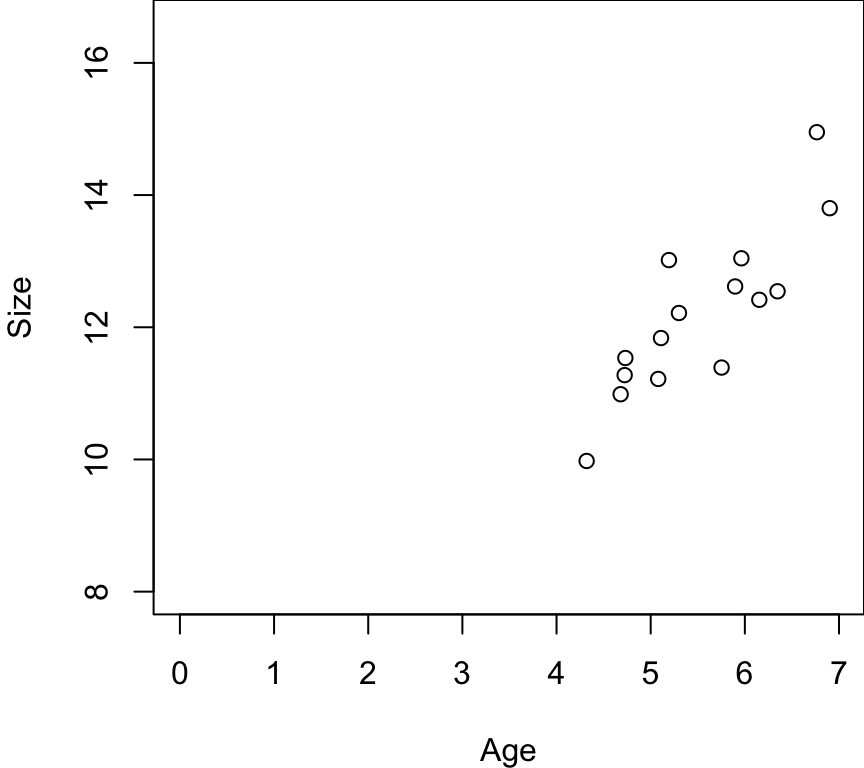
And you also had a really hard time catching old males…
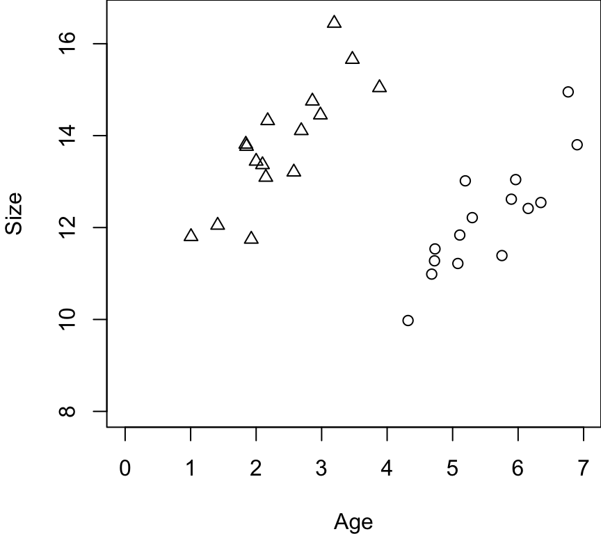
Let’s say I run this model:
\(Y = \beta_0 + \beta_1 Age\)
Sex is not included in this model… but Sex is correlated with age! Our sample only includes old females and young males. (A T-test comparing age between females and males would be different.)
Q: If I ran a regression, where would the line go?
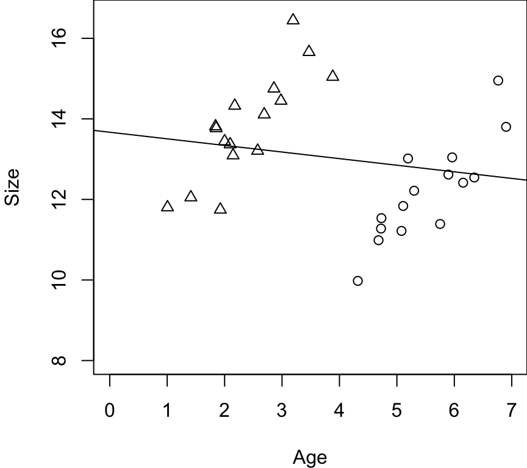
For these data, it would be ~horizontal across the data. This is a biased estimate. This estimate incorrectly estimates the effect of age on size of these animals.
However, if we run this model:
\(Y = \beta_0 + \beta_1 Age + \beta_2 Sex\)
We get two lines! And these lines will look like:
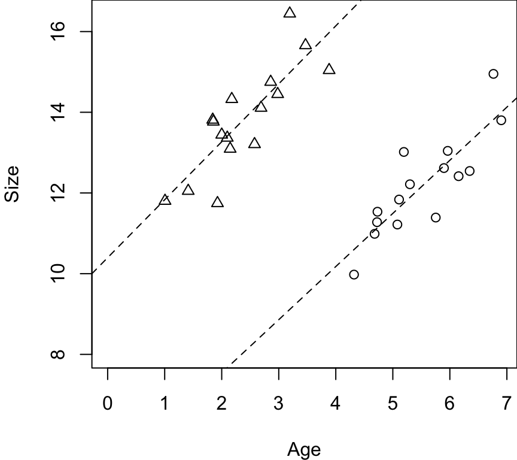
Now, we get unbiased estimates of the effect of Age on Size for each Sex.
If we leave out Sex in the first model, some of that Sex effect is being transmitted to the effect of Age.
- Females are smaller than males, and it’s biasing that effect on Size.
- The difference in size is transmitted to the effect of Age.
The same thing might be happening in the TV-effect on mortality study. There were many other variables that were correlated to watching TV that were really influencing mortality. Their effects, which were left out of the statistical model, were being transmitted to the effect of watching TV.
Q: Does that make sense? Questions?
Reiterating the important point: if we leave confounding variables out of our model, we get biased estimates of the variables that we do leave in the model.
- So, we want to collect data on confounding variables and include them in the model.
- And we want to do this even if they are not statistically significant. We’ll talk about model building later in the class and when you should/should not remove variables from models.
In general though, we want to leave variables in to statistically control for confounding effects.
Tradeoff
If confounding variables are included in model –> Variance Inflation
When we run a model with multiple X-variables, the computer package is trying to figure out which of the two variables are having an effect on Y. But they are correlated to eachother, which makes it tough for the software to figure out out which X-variable is having what effect. And the more strongly they are associated with eachother, it becomes more difficult for the software to disentangle these effects.
A consequence of this is that more variables cause greater uncertainty in the effects (\(\beta\)s). Increased uncertainty is reflected in:
- increased SE
- increased CI
- increased P-values
This can lead to problematic results.
I mentioned during the last class that, generally, if we add a variable to a model, the p-values for the variables in a model go down. However, collinearity is the one exception to that rule! And in fact, it’s a red flag.
My recommendation is that, before you even start your analysis, you need to know what the collinearity is between your X-variables! Plot your X-variables, run some linear models (e.g., between Age and Sex), and learn about what the collinearity is.
- Some people fail to do this and problems occur. For example, they might build a model where Age was significant… and then they add Sex, and Age is no longer significant…
- If the P-value goes up a lot when you add a variable to a model, this is a symptom of collinearity! This is happening because of collinearity between X-variables.
Symptoms of collinearity
- Collinearity between independent variables
- High \(r^2\) values
- Statistically-significant relationships between X-variables
- High variance inflation factors (VIF) of variables in model
- Variables significant in simple regression, but not in multi-variable regression
- Individual variables not significant in multi-variable regression model, but the overall multi-variable regression model is significant
- Large changes in coefficient estimates between full and reduced models
- Large SE in multi-variable regresion models, despite high power
Breaking this list down a bit…
The easiest way to know if you have collinearity is to examine fit a linear model between your two independent variables and see if they have high \(r^2\) values or if there is a statistically-significant relationship between them.
High variance inflation factors (VIF) of variables in model. Next class I will show you how to examine VIF for variables in a model.
As I said before, if you have significant variables in a simple linear regression, but then you add another variable(s) to create a multi-variable regression and the individual variable(s) is no longer significant, then you have collinearity.
If you build a multi-variable model where (i) none of the individuals variables are significant, but (ii) the overall whole model is significant (the p-value at the bottom of the model0), then you have collinearity. The whole model is significant, but none of the individual variables is significant.
- How does that happen? All of the X-variables are explaining a lot of the Y-variable, but the software is having a hard-time figure out which X-variable is explaining the response. And the collinearity causes the p-values for individual variables to go up.
Generally, when you add variables to a model, the betas should not change too much. What do I mean by ‘too much’? E.g., when you have a simple model with beta and CI, and then you add another X-variable to the model to create a multi-variable model, then the new estimate for your beta should be within the 95% CI of the original estimate. If it moves to be outside of the 95% CI of the original estimate, that’s a considerable change and is a symptom of collinearity of the X-variables.
What if you have 25,000 samples, and you have huge standard errors. Why are the SE so big, when we have such a large sample size? Collinearity in the system can increase SE, increase CI, and decrease p-values.
Questions?
Simulation Exercise 1
When confronted with collinearity, a common approach taken by many folks in our field is to take variables out of the model. However, this has a consequence that they do not understand – it biases our estimates! – so this is not the approach I recommend.
I’m going to show you a simulation exercise that demonstrates:
- Collinearity influences parameter estimates, uncertainty, and p-values when confounding variables are not included in the model, and
- When all the necessary confounding variables are included, collinearity increases uncertainty and p-values but does not bias estimates.
Truth
\(\beta_1 = 3\) \(\beta_2 = 3\) \(z = U[0.5,20]\) – an estimate of how much correlation (collinearity) there is between \(X_1\) and \(X_2\)
For the simulation exercise, I simulated 1,000 datasets with varying degrees of collinearity (correlation) between two X-variables. Here is truth:
- Simulations: \(n = 1,000\)
- \(y = 10 + 3X_1 + 3X_2 + \epsilon \sim N(0, 2)\)
- \(X_1 = U[0,10]\)
- \(X_2 = X_1 + N(0, z)\)
- For each simulation, I used a different value of z from a uniform distribution: \(z = U[0.5, 20]\).
Low values of z (e.g., z = 0.5) caused high collinearity between the X-variables, because only a little bit of noise gets added to \(X_1\) to calculate \(X_2\). Alternatively, high values of z (e.g., z = 20) had low collinearity, because large noise was added to \(X_1\) to calculate \(X_2\). In other words, the low values of z caused very little noise (and high collinearity) between \(X_1\) and \(X_2\), while the high values caused great noise (and low collinearity) between the variables.
For each simulation, I did a few things:
- Fit a simple model (\(Y ~ X_1\)) and measured the estimate, SE, and p-value for \(\beta1\)
- Fit a multi-variable model (\(Y ~ X_1 + X_2\)) that included both of the collinear, confounding variables, and measured the effect, SE, and p-value for \(\beta1\).
Most importantly, I measured how collinearity between \(X_1\) and \(X_2\) (i.e., \(r^2\)) influenced the the Variance Inflation Factor from the multi-variable model.
I’m going to show a number of graphs, and for all of these graphs the X-axis is a measure of collinearity (correlation; \(r^2\)) between \(X_1\) and \(X_2\). If it’s collinearity equals 1, then the variables are perfectly correlated, whereas low values show weak/no correlation.
The first graph I am going to show you describes how the Variance Inflation Factor score is influenced by collinearity. The Variance Inflation Factor is a metric used to diagnose whether there may be collinearity between X-variables in a multiple-variable model.
Variance Inflation Factor (VIF) – the amount (in times) that the variance (\(SE^2\)) in the \(\beta\) increases due to collinearity
- E.g., if VIF = 4, then the variance is 4 times what it would be if you didn’t have collinearity – and the SE would be doubled (\(SE = \sqrt4 = 2\)).
First, let’s see how the VIF is influenced by collinearity:
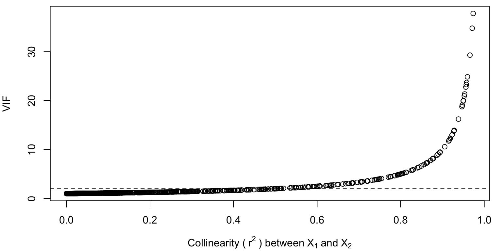
This graph shows how VIF scores increase with increasing collinearity.
Some people say that if the VIF > 10, you need to worry about collinearity. In this case, the SE would be triple what it would otherwise be without collinearity. This happens when \(r^2 = 0.9\), and the two X-variables are almost perfectly correlated. This is too high, in my opinion.
Rule-of-thumb: VIF > 2, recognize that you have collinearity in your data.
VIF = 2 ~ \(r^2\) = 0.6 – so another rule of thumb is that an \(r^2 > 0.6\) may also indicate collinearity.
Simple regression model: \(Y \sim X_1\)
Now, let’s consider results from the simple model (\(Y \sim X_1\)) across the simulations.
The most important thing I want to emphasize to you all is in this first graph. How is the beta for \(X_1\) influenced by collinearity in the simple model?
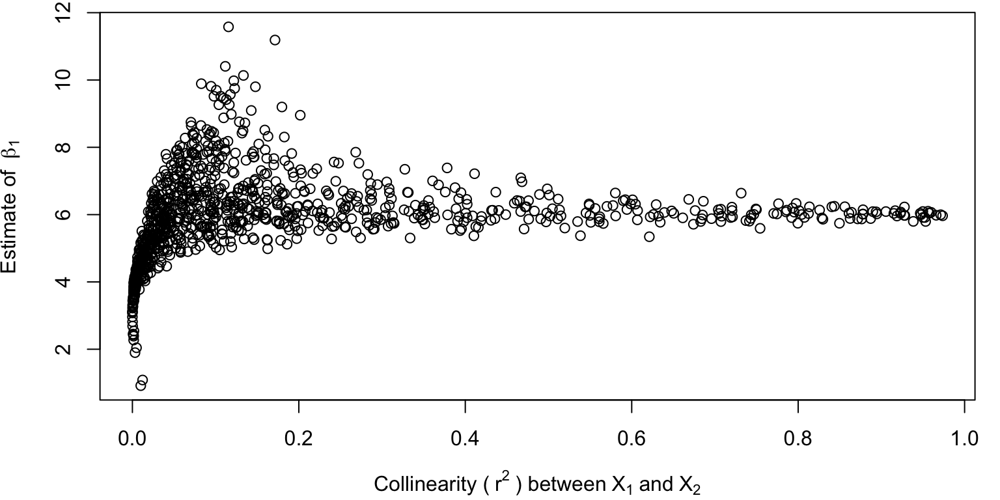
This graph shows, again, the \(r^2\) between \(X_1\) and \(X_2\) (how correlated they are) on the X-axis, and the Y-axis shows the estimate for the beta for \(X_1\). If there is no collinearity, the estimate is 3 – which is truth! Bottom-left-hand side of the graph.
However, even with a very little bit of collinearity (\(r^2 < 0.2\)), the parameter estimate is biased! As collinearity increases, the parameter estimate jumps pretty quickly up to 6!
Q: Why 6? 6 = 3 + 3. Because the two X-variables are correlated, the estimation model starts to assign the effect of \(X_2\) onto \(X_1\).
Not including the confounding variable introduces bias in our estimates and negatively influences our inference.
Now, often in this class we ask: how do different approaches influence betas, uncertainty, and p-values. Next we might ask ourselves: how is standard error (SE) influenced by collinearity in the simple model?
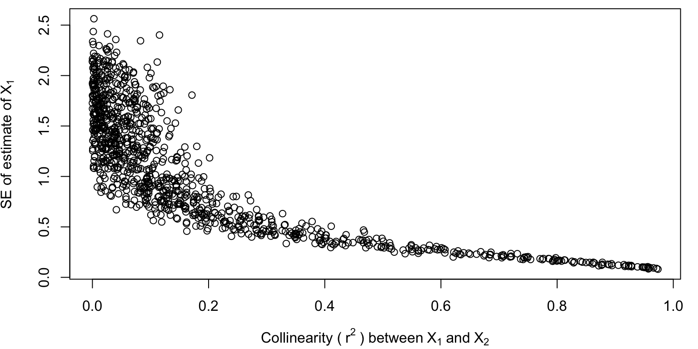
This is where it gets a little scary.
Not only is the parameter estimate biased, the standard error gets smaller and smaller. As collinearity increases, your estimates are getting more and more precise…
How are p-values influenced by collinearity in the simple model?
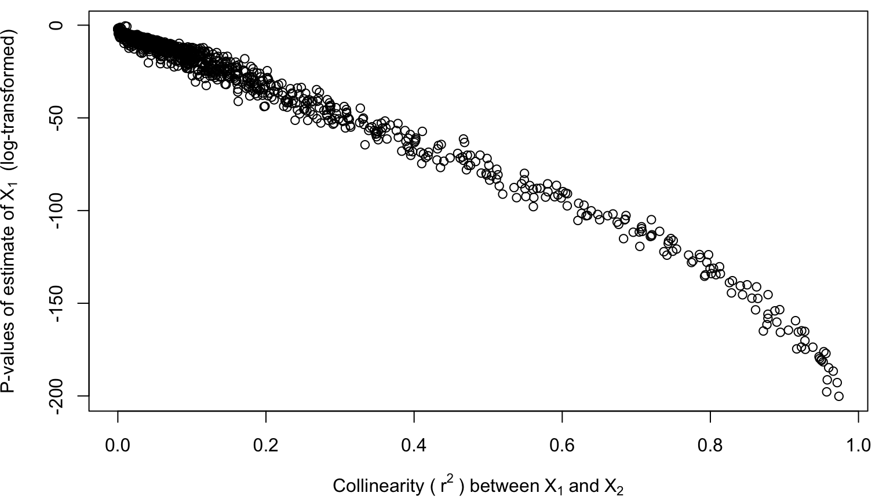
As uncertainty gets smaller and samller, our p-values also get smaller and smaller, because the effect of collinearity gets bigger and bigger…
So, collinearity is really dangerous! If you have collinearity in your data, and you leave out some confounding variable, you are going to get biased estimates, and it’s going to seem like it’s a really precise estimate with a clear result. Unless…
Q: What if the effect of \(X_2\) was -3? The two effects might cancel eachother out, and our estimate would be zero, with a small SE, and false confidence that there is no effect.
If the effect of the unaccounted confounding variable, \(X_2\), has an effect in the opposite direction, the collinear effects may partially or wholly cancel eachother out, and you may fail to observe any true effect of X on Y.
Multi-variable model: \(Y \sim X_1 + X_2\)
Now, let’s consider results from the multi-variable model (\(Y \sim X_1 + X_2\)) across the simulations. This is the model where we have statistically controlled for that collinearity.
Let’s start here by asking: how does collinearity influence the beta for \(X_1\) in the multi-variable model?
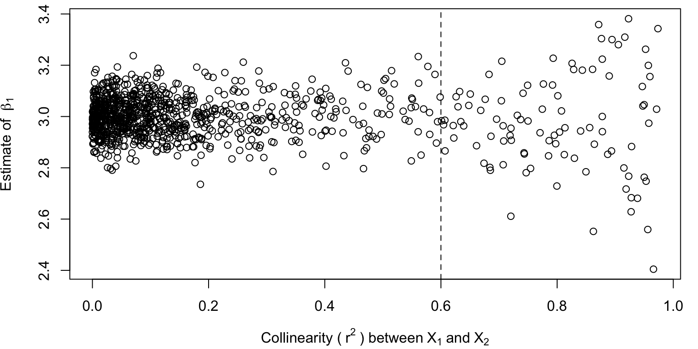
On the Y-axis, we have the coefficient estimate for \(\beta_1\), and the X-axis is again the correlation between the two X-variables.
The estimate is good, right around 3 (truth)!! But as collinearity increases, the estimate can be more variable. So by including the confounding variables, your estimate is good, but the bad news is that due to the collinearity, you have less certainty in your estimate. But at least the estimate is unbiased, which is the most important thing.
Remember the rule of thumb about \(r^2\) indicating collinearity? Previously I said that when \(r^2 = 0.6\), collinearity should be on your radar. In this graph, we can see that simulations with collinearity greater than 0.6 start to have parameter estimates that are more variable. However, the mean is still centered on ~3 (Truth) after this rule-of-thumb. So no matter how much collinearity there is, on average we will continue to get an unbiased estimate of the effect of X-variables in the model. In statistics, any one estimate may be bad – but on average, for this multi-variable model, the estimates will be unbiased.
Another thing that we can see from this graph is the variance inflation itself! As collinearity increases along the X-axis, the cone of simulation results gets bigger, because there is more and more uncertainty in what the parameter estimate really is.
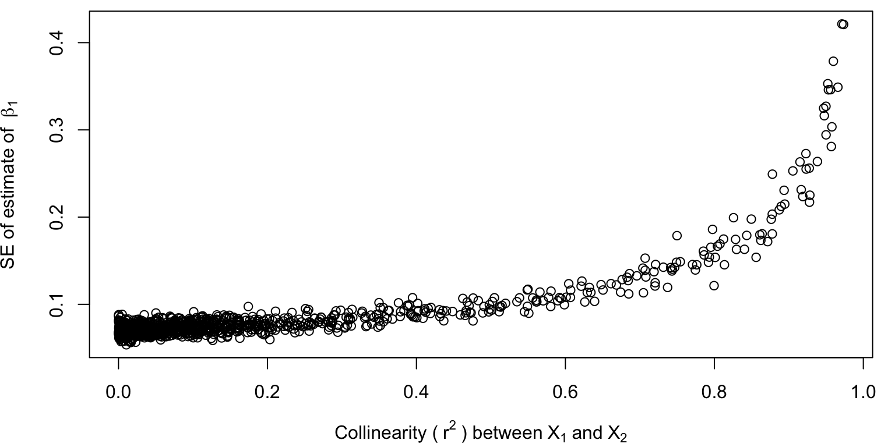
And we see this here as well with the SE estimates. As collinearity increases, SE of the estimate increases, again suggesting increasing uncertainty due to collinearity.
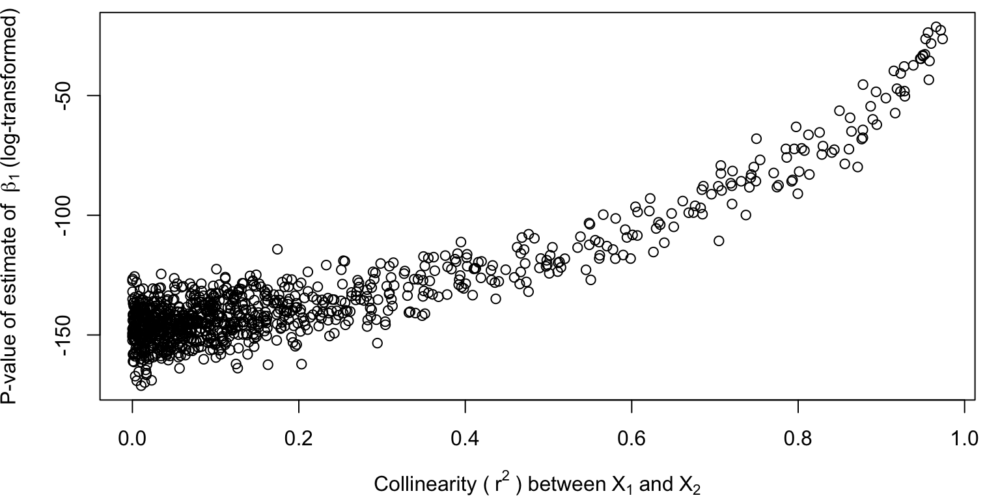
And again, as uncertainty increases, p-values increase as well.
But hopefully the takehome message is clear. Failing to account for confounding variables in a model will bias estimates. Accounting for those confounding variables will produce unbiased estimates, although the uncertainty may increase.
Confounding variables
Confounding variable – a variable that will bias results if you leave it out. There are two key features for confounding variables:
- Correlated with another X-variable
- Has it’s own effect on Y
To avoid negative effects of confounding variables, I recommend:
Sample in a manner that eliminates collinearity. Collinearity may be real, or it may be due to sampling artifact. E.g., in the first example above, collinearity was introduced due to non-random sampling of the different sexes. Collect your data in a way that eliminates collinearity.
Use multi-variable regression. If you have collinear X-variables, it may cause your SE to be large, but your estimates will be unbiased. If you fail to include confounding variables, then estimates will be biased.
Include confounding variables, even if they are non-significant.
Scenarios: two collinear variables (Age and Sex), and you run the full model. VIF is really high (e.g., 10). SE and CI are very inflated, but everything is still significant. Do you do anything? No.
- Your estimates are unbiased, because you ran the full model.
- Your CI are large, but still statistically significant.
- You have identified that you have collinearity, which caused the large CI. But the betas are unbiased.
But sometimes you run the analysis but X-variables are not significant. What do you do then?
- Get more data! This decreases SE and VIF.
Most problems in statistics can be improved by getting more data. Increasing N decreases SE, CI, and P-values… If none of your data are significant due to collinearity, maybe you just need to collect more data.
- There are statistical techniques that can eliminate collinearity. One of those is Principal Component’s Analysis, which we may talk about in this class. Popular analysis. What this analysis does is it creates new variables that are orthogonal – which means they have zero collinearity.
Redundant variables
If collinearity between X-variables results in biased estimates, why do so many people throw out their variables in favor of reduced models that will suffer from collinearity and thus have biased estimates?
Well, you can do this sometimes – primarily when your collinear X-variables don’t have an effect on Y.
These are sometimes called redundant variables – collinear X-variables that don’t have an effect on the Y-variable.
- Correlated to another X-variable, but
- Do not have an effect on Y
They are similar to confounding variables by being correlated to another X-variable, but the key difference is that they do not have an effect on Y.
- If they don’t really have an effect (i.e., \(\beta\) = 0), there is no problem when you take them out. Leaving out a redundant variable does not cause bias, because it does not have an effect to add onto another variable included in the model!
- If you leave out a confounding variable, it assigns it’s effect to the other collinear variable you left in. In the case of redundant variables, leaving them out assigns the effect to the other X-variable – but that effect was zero!
- If you include a redundant variable, it will cause variance inflation.
In truth, there are no confounding or redundant variables, but rather it’s a continuum depending on the \(\beta\).
- If the \(\beta \neq 0\), it’s a confounding variable.
- If the \(\beta = 0\), it’s a redundant variable.
You don’t need to leave in redundant variables, and leaving them in will generate variance inflation.
What’s an example of a redundant variable? Watching TV and it’s effect on mortality. If you leave this in your analysis, you will measure a \(\beta = 0\) after you include all of the other important things that truly do influence mortality. And by leaving it in the model you will increase SE, CI, and p-values of all of the other important variables.
Redundant vs. Confounding Variables
Like I said before, many scientists tend to throw out correlated X-variables because they are afraid of ‘collinearity’, and they want to reduce the model to avoid variance inflation.
This is fine – if you are 100% certain that those variables are redundant.
If they are confounding variables, they must be included – because removing them will cause biased betas, reduced uncertainty, and small p-values.
So, how do we know whether variables are redundant or confounding variables?
Redundant vs. Confounding Variable
1. Logic!
Put some thought into your variables. Statistics is a thinking exercise and should involve critical thinking. Is it likely that your X-variable has it’s own effect on Y? If so, include it.

Example: Gopher Tortoises. The gopher tortoise is a burrow-digging turtle species in the southeastern United States that is a species of conservation concern. Reproduction is important for populations to grow and persist, and researchers are interested in what causes reproduction in tortoise populations. Male tortoises are known to compete with eachother for access to females, and they often get in wrestling matches for access to females. Males sometimes have large shell extensions under their neck called ‘gular scutes’ that are used to flip other males during male-male combat. People have wondered what are the factors that influence reproductive success of tortoises: age, body size, or gular scute size? These factors are all correlated: older tortoises get larger bodies and may grow larger gular scutes. However, there is likely variation in growth rates such that sometimes younger tortoises may be larger and/or have larger gular scutes than older tortoises. The question is: are these variables redundant or confounding variables?
There may be an argument that they all of these variables are measures of age, and shell size and gular scute size are redundant variables. Alternatively, it could be that they each have their own effect, where age, size, and gular scute length have different effects on reproductive success. Maybe: (1) older tortoise are more experienced at winning wrestling matches, (2) larger animals are better at winning wrestling matches, and (3) animals with larger gular scutes are better at winning wrestling matches or provides a signal of fitness to females. So each one could have a different mechanism, such that you might have an instance where a young, small animal but with big gular scutes performs well at reproducing.
So, think about mechanisms for how different X-variables might influence Y. If those mechanisms are different, then they may have different effects on Y, and thus may be confounding variables.
A helpful way to do this is to build a conceptual model describing hypotheses for how all variables might be related in your system and then use that model to guide what variables you might want to measure. I recommend this to most students and collaborators I work with!
2. What happens between ‘full’ and ‘reduced’ models?
A full model has all of the X-variables, whereas a reduced model has a subset of X-variables. How does reducing the model influence the betas and p-values? If you reduce the model and the betas change a lot, this is an indication of collinearity.
- Confounding variable – removing it changes the betas for the other variables
- Redundant variable – removing it does not change other betas
(‘Change’ is a subjective term, but our usual rule of thumb would be that it caused effect to move outside of the original confidence limits.)
Conversely, we can think about this in terms of adding variables to a model.
When adding other variables, redundant \(\beta\)s tend to go to zero
A good example of this is the ‘watching TV study’! It looks like watching TV has an effect when it’s all by itself in the model. But when you add the confounding variables that truly have an effect on Y, the effect of TV will probably go to zero, because it is a redundant variable. So, when you add other variables to a model, the beta for the redundant variable will tend to go to zero.
In other words, if a variable had an effect but then you added in a bunch of other variables and the effect disappeared – then it probably never had an effect to begin with, it was just a redundant variable.
When adding other variables, confounding \(\beta\)s will still be ‘substantial’. They may not still be statistically significant because we have added more variables and contributed to variance inflation. However, if we look at the beta and it still looks like a biologically-significant effect, then it may be a confounding variable that lost significance due to variance inflation.
In general, betas should not change when you add additional variables to a model. If they do, you have collinearity.
This is a point in the class where things are starting to get pretty nuanced and we need to be pretty strategic and careful about how we approach our work.
3. \(r^2\) between variables
This is not a rule, but rather a guideline. If you examine the correlation between two X-variables and see an extremely high \(r^2\) value, it’s most likely that those variables are redundant. Very, very strong collinearity tends to imply redundancy.
Rule-of-thumb: high \(r^2\) tends to suggest redundancy.
4. Not sure? Treat as confounding.
If you are not sure, treat it as confounding.
Q: Why?
Because then you will include it in your model, account for its statistical effect, if one exists. If it’s actually a redundant variable, then there is no effect! Your parameter estimates will be unbiased and the only consequence will be a little bit of variance inflation and reduced uncertainty. This is much better than leaving out an important, confounding variable and having consequences on your betas!
General takeaway here: if adding variable(s) causes the beta of a variable to change to zero, then it’s probably a redundant variable, and this should be pretty obvious.
Simulation Exercise 2
This simulation exercise is similar as before, but now only \(X_1\) has an effect, and \(X_2\) is a redundant variable.
Let’s look at how correlation between \(X_1\) and \(X_2\) influences the Variance Inflation Factor.

The relationship between collinearity and Variance Inflation does not change if it’s a confounding or redundant variable. Adding a redundant variable will still cause Variance Inflation, as I mentioned before.
Simple regression model: \(Y \sim X_1\)
Now, we see that the existence of a redundant variable does not influence our estimation of \(\beta_1\) using a simple linear model! This is good.
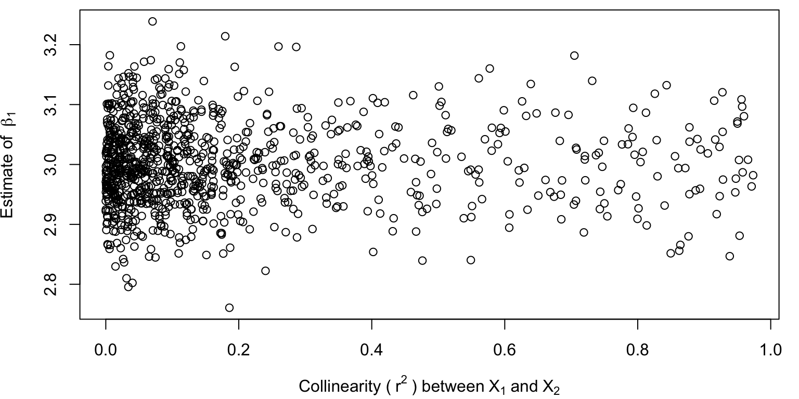
There is some variation in the parameter estimates due to random chance, but the estimates are unbiased along the gradation of correlation with the redundant, collinear variable.
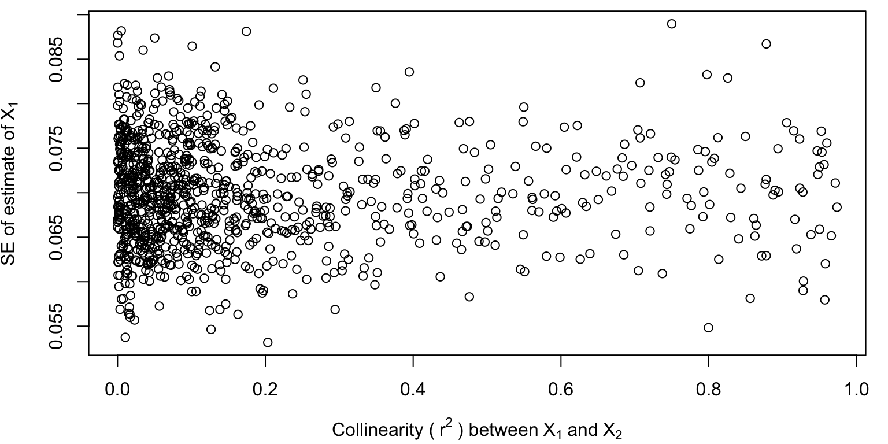
SE estimates are also unbiased and do not change due to the existence of the redundant variable.
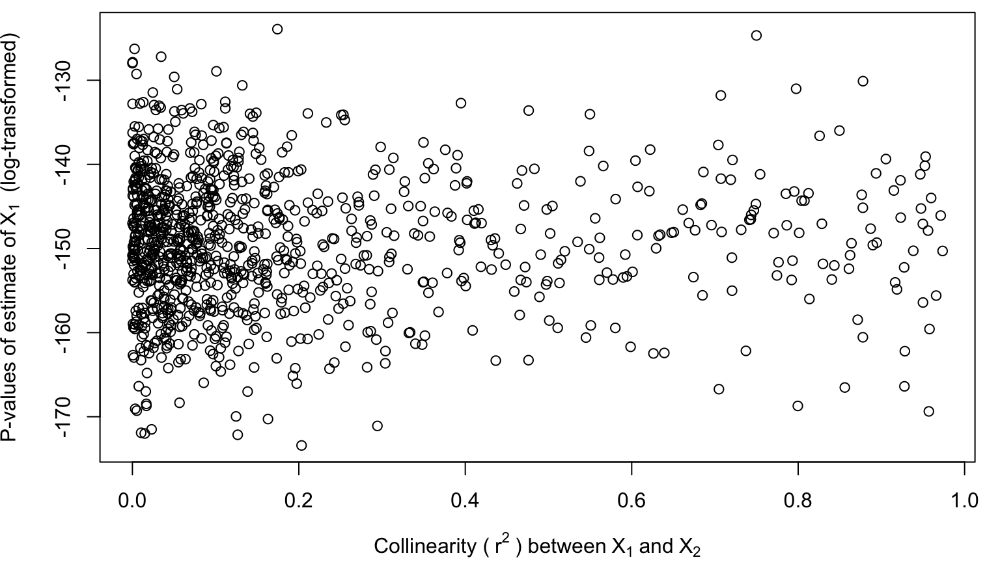
Nor are p-values influenced!
This simulation supports my previous suggestion that: redundant variables do not influence estimation, error, or p-values in our simple linear model.
Simple linear model w/ redundant var: \(Y \sim X_2\)
What if I now run a simple linear model but with \(X_2\) as the only X-variable? Remember, \(X_2\) is collinear with \(X_1\) – but does not have an effect on Y.
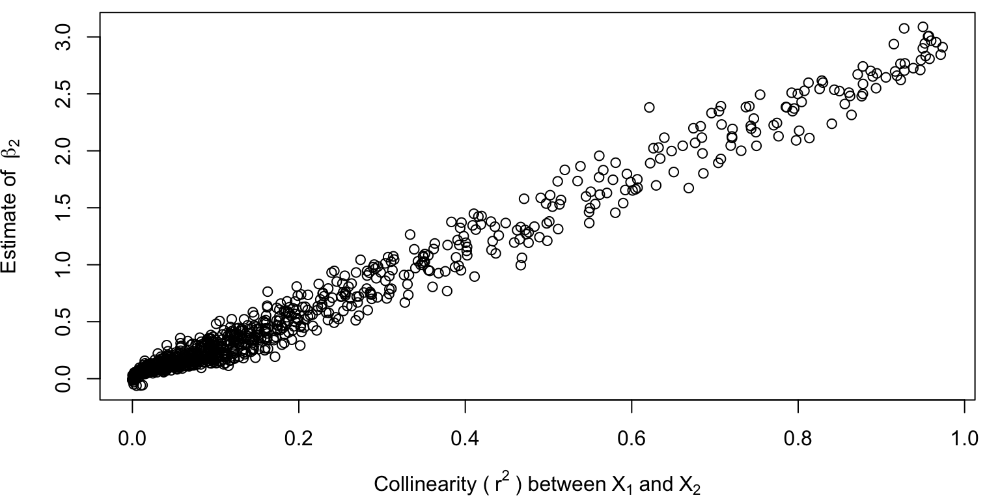
So this is interesting. When \(X_2\) has low correlation with \(X_1\), the effect is measured as zero – because the two variables are not collinear, and \(X_2\) truly does not have an effect. However, when correlation between \(X_2\) and \(X_1\) increases, all of the sudden the true effect of \(X_1\) (the variable not included in the model), is now assigned to \(X_2\)! The stronger the relationship between X1 and X2, the more the effect of X1 is assigned to X2.
This is what is happening in the TV-mortality study. A redundant, collinear variable is being assigned the effect(s) of other true, confounding variables.
Multi-variable model: \(Y \sim X_1 + X_2\)
Now, what happens with the multi-variable model?
Estimates of \(X_1\):
Our estimate of \(X_1\) is unbiased and close to truth! But the variance increases due to the presence of the collinear, redundant variable in the model. The cone shape suggests more uncertainty due to the variance inflation and the presence of the redundant variable. With two collinear variables in the model, R has a harder time figuring out which was has the effect.
Let’s see what it estimates for \(X_2\):
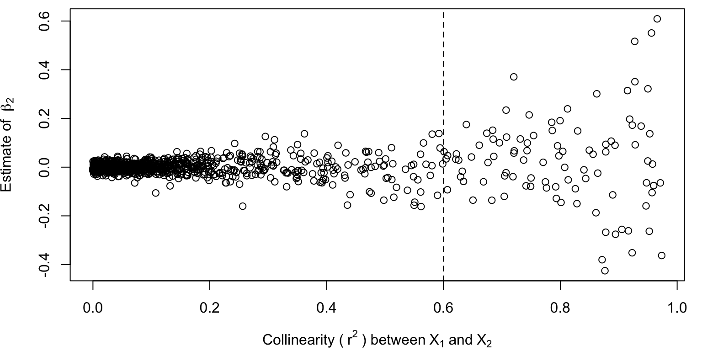
It estimates the effect of the redundant variable to be zero! As collinearity increases, the estimate remains unbiased and correct at around zero – although the variance inflation again causes less certainty in the estimate, on average.
Practical guidance for examining and dealing with collinearity
These lists mostly review what I have talked about during class so far today - quite a bit of content! [Show these lists on the projector]
Do you have collinearity in your data or system?
- Be careful to identify potential confounding variables prior to data collection. Use logic and try to identify all confounding variables and measure these.
- Calculate collinearity and VIF among independent variables – before you start your analysis. High collinearity between X-variables tends to imply redundancy.
- Pay attention to how coefficient estimates and variable significance change as variables are removed or added.
Is a variable redundant or confounding?
- Think! Use logic.
- If there is extreme collinearity
- Likely redundant
- Large changes in coefficient estimates of both variables between full and reduced models
- Confounding
- Large changes in coefficient estimates of one variable between full and reduced models
- Redundant – full model estimate close to zero
- Not sure whether it’s redundant or confounding? Assume confounding & include it.
- Multi-variable regression also produces unbiased estimates (on average) regardless of the type of collinearity
What to do with redundant variables?
- Determine which variable best explains the response using P-values from regression and changes in coefficient estimates with variable addition and removal
- Do not include redundant variable in final model (to reduce VIF)
- Try a variable reduction technique (e.g., PCA)
What to do with confounding variables?
- Sample in a manner that eliminates collinearity, which can be due to real collinearity or sampling artifact
- Use multiple regression; may hvae large SE if collinearity is strong
- Include confounding variables, even if non-significant.
- Get more data! Decrease SE due to variance inflation.
Analysis in R
Let’s examine some data I simulated in R. The dataset is located here.
These data are similar to the Age, Sex, and Size data we simulated for last class. There is no collinearity between Age and Sex. However, now there are two additional X-variables, MotherSize and FatherSize, and both of those variables are a function of Age. All of these variables influence size, so they are all examples of confounding variables.
par(mar=c(4,4,0,0))
# Read in the data
datum <- read.csv("lecture_13_dataset1.csv")
# Examine the data
head(datum, 10)## Age Sex Male MotherSize FatherSize Size
## 1 3.588198 Female 0 -1.1584838 4.375937 9.725305
## 2 8.094746 Female 0 3.0661995 8.863788 18.078616
## 3 4.680792 Female 0 -0.3620782 5.012995 11.676238
## 4 8.947157 Female 0 5.3157589 7.938780 20.144040
## 5 9.464206 Female 0 4.2384346 9.344753 22.191753
## 6 1.410008 Female 0 -2.0735209 1.129613 5.855379
## 7 5.752949 Female 0 -0.7958034 6.315939 14.598091
## 8 9.031771 Female 0 4.6163851 8.659333 20.707404
## 9 5.962915 Female 0 1.0867694 6.939889 14.458792
## 10 5.109533 Female 0 0.3254742 4.734952 11.450063# Plot the data
plot(Size ~ Age, data = datum)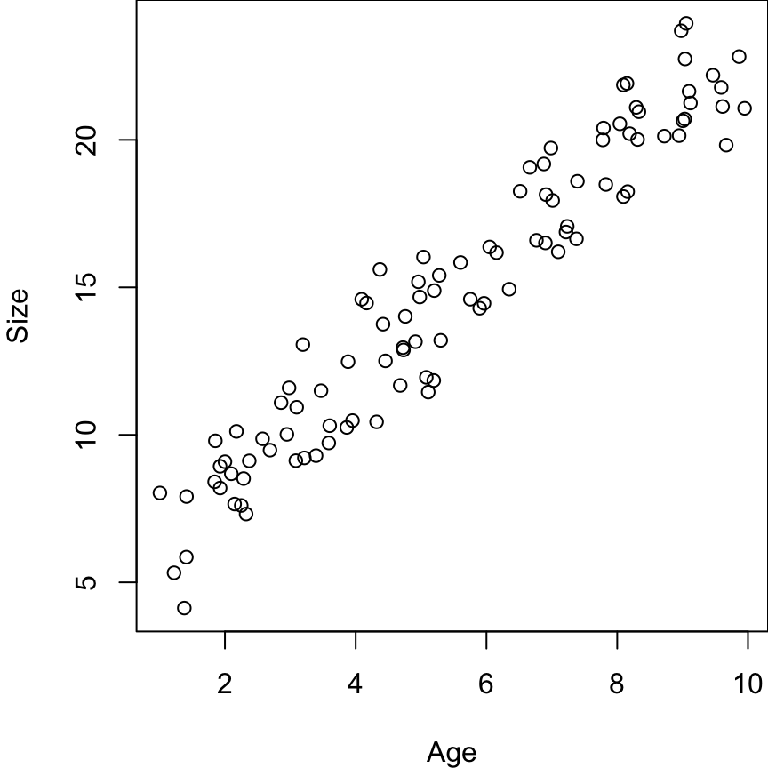
It’s useful to write Truth up on the white board so that we can refer back to that while running the analysis in R…
Truth:
- Age = 1.5
- Sex = 2.5
- MotherSize = 0.2
- FatherSize = 0.2
- \(\sigma = 1.2\)
We want to start by testing if there is collinearity among our data. The easiest way to do this is by running linear models among our X-variables.
# Run lm() for different pairs of X-variables
results <- lm(Age ~ Sex, data = datum)
summary(results)##
## Call:
## lm(formula = Age ~ Sex, data = datum)
##
## Residuals:
## Min 1Q Median 3Q Max
## -4.459 -2.293 -0.285 2.430 4.571
##
## Coefficients:
## Estimate Std. Error t value Pr(>|t|)
## (Intercept) 5.6808 0.3635 15.627 <2e-16 ***
## SexMale -0.3876 0.5141 -0.754 0.453
## ---
## Signif. codes: 0 '***' 0.001 '**' 0.01 '*' 0.05 '.' 0.1 ' ' 1
##
## Residual standard error: 2.571 on 98 degrees of freedom
## Multiple R-squared: 0.005766, Adjusted R-squared: -0.004379
## F-statistic: 0.5683 on 1 and 98 DF, p-value: 0.4527The p-value is high (non-significant) and \(r^2\) value is low, suggesting there is no collinearity. (And there isn’t, because I didn’t simulate there to be any.)
# Run lm() for different pairs of X-variables
results <- lm(Age ~ MotherSize, data = datum)
summary(results)##
## Call:
## lm(formula = Age ~ MotherSize, data = datum)
##
## Residuals:
## Min 1Q Median 3Q Max
## -2.25851 -0.51424 0.02135 0.63884 2.19596
##
## Coefficients:
## Estimate Std. Error t value Pr(>|t|)
## (Intercept) 5.10454 0.09270 55.07 <2e-16 ***
## MotherSize 0.88276 0.03387 26.07 <2e-16 ***
## ---
## Signif. codes: 0 '***' 0.001 '**' 0.01 '*' 0.05 '.' 0.1 ' ' 1
##
## Residual standard error: 0.9153 on 98 degrees of freedom
## Multiple R-squared: 0.874, Adjusted R-squared: 0.8727
## F-statistic: 679.5 on 1 and 98 DF, p-value: < 2.2e-16\(r^2\) is now 0.874 – definitely collinearity here! (And we know this to be the case.)
And we can do this for other pair of X-variables as well, as much as we want or need to.
However, an alternative way to do this is to create a ‘correlation matrix’ using the function ‘cor()’, which calculates the correlation among all pairs of continuous X-variables your provide to the function.
- ‘cor()’ won’t work for our dataframe, because it requires all continuous variables and Sex is a categorical variable. So drop Sex and Size.
- This will run a simple ‘lm()’ between all pairs of X-variables and calculate r value for each pair (measure of correlation)
# Create new dataframe without categorical Sex
datum2 <- subset(datum, select = -Sex)
datum2 <- subset(datum2, select = -Size)
# Examine new subsetted data
head(datum2)## Age Male MotherSize FatherSize
## 1 3.588198 0 -1.1584838 4.375937
## 2 8.094746 0 3.0661995 8.863788
## 3 4.680792 0 -0.3620782 5.012995
## 4 8.947157 0 5.3157589 7.938780
## 5 9.464206 0 4.2384346 9.344753
## 6 1.410008 0 -2.0735209 1.129613# Correlation matrix - runs a simple 'lm()' between each pair of X-variables
cor(datum2)## Age Male MotherSize FatherSize
## Age 1.00000000 -0.07593267 0.9348535 0.93823222
## Male -0.07593267 1.00000000 -0.1457588 -0.08094226
## MotherSize 0.93485348 -0.14575882 1.0000000 0.86631881
## FatherSize 0.93823222 -0.08094226 0.8663188 1.00000000[Squaring this would produce the usual \(r^2\) metric we are familiar with.]
This is a quick-and-easy way to assess correlation between X-variables.
Another way is to run a full linear model with all of the X-variables and ask for the Variance Inflation Factors! The VIF function exists in the package ‘car’, which you will have to download to your computer one time. It has a lot of ‘dependencies’ (other necessary R packages) that will have to be downloaded…
# Download 'car' by uncommenting this next line and running it through your console
# install.packages("car", dependencies=TRUE)Now we can fit a linear model with all X-variables and then run the VIF function.
# Full linear model with all X-variables
results <- lm(Size ~ Age + Sex + MotherSize + FatherSize, data = datum)
# Use the VIF function from 'car'
# using 'car::vif()' will tell R to call the function 'vif()' from the package 'car' specifically
car::vif(results)## Age Sex MotherSize FatherSize
## 17.062688 1.055190 8.381097 8.437139These are the Variance Inflation Factors for each X-variable. These effects describe how much (in times) the variance of each variable increased due to collinearity. So, the variance of Age was 17 times increased what it would have been in the absence of collinearity…
# Square-root this to get VIF in terms of Standard Error
car::vif(results)^0.5## Age Sex MotherSize FatherSize
## 4.130701 1.027225 2.895012 2.904675SE of Age is 4 times larger than what it would have been without collinearity. Sex is not influenced (times ~1), but the SE and 95% CI are 4 or 3 times larger than what would happen without collinearity.
Note: the VIF is the variance inflation due to collinearity of all other variables combined. So collinearity with multiple other X-variables can contribute to variance inflation of each variable.
# Simple linear model of Size ~ Age
results <- lm(Size ~ Age, data = datum)
summary(results)##
## Call:
## lm(formula = Size ~ Age, data = datum)
##
## Residuals:
## Min 1Q Median 3Q Max
## -2.9934 -1.1775 0.0039 0.9656 2.9169
##
## Coefficients:
## Estimate Std. Error t value Pr(>|t|)
## (Intercept) 4.55544 0.32958 13.82 <2e-16 ***
## Age 1.86126 0.05446 34.17 <2e-16 ***
## ---
## Signif. codes: 0 '***' 0.001 '**' 0.01 '*' 0.05 '.' 0.1 ' ' 1
##
## Residual standard error: 1.39 on 98 degrees of freedom
## Multiple R-squared: 0.9226, Adjusted R-squared: 0.9218
## F-statistic: 1168 on 1 and 98 DF, p-value: < 2.2e-16This estimate is wrong – not close to truth – and the confidence intervals are small.The effect size and confidence intervals were misleading because we did not account for confounding variables!
# Simple linear model of Size ~ MotherSize
results <- lm(Size ~ MotherSize, data = datum)
summary(results)##
## Call:
## lm(formula = Size ~ MotherSize, data = datum)
##
## Residuals:
## Min 1Q Median 3Q Max
## -5.032 -1.776 0.026 1.599 4.577
##
## Coefficients:
## Estimate Std. Error t value Pr(>|t|)
## (Intercept) 14.06203 0.22994 61.15 <2e-16 ***
## MotherSize 1.62990 0.08401 19.40 <2e-16 ***
## ---
## Signif. codes: 0 '***' 0.001 '**' 0.01 '*' 0.05 '.' 0.1 ' ' 1
##
## Residual standard error: 2.27 on 98 degrees of freedom
## Multiple R-squared: 0.7934, Adjusted R-squared: 0.7913
## F-statistic: 376.4 on 1 and 98 DF, p-value: < 2.2e-16Again, same problem here.
# Simple linear model of Size ~ MotherSize
results <- lm(Size ~ Age + MotherSize, data = datum)
summary(results)##
## Call:
## lm(formula = Size ~ Age + MotherSize, data = datum)
##
## Residuals:
## Min 1Q Median 3Q Max
## -2.98655 -1.17599 -0.02344 0.89925 3.01724
##
## Coefficients:
## Estimate Std. Error t value Pr(>|t|)
## (Intercept) 4.0338 0.7976 5.058 2.01e-06 ***
## Age 1.9646 0.1538 12.775 < 2e-16 ***
## MotherSize -0.1043 0.1452 -0.719 0.474
## ---
## Signif. codes: 0 '***' 0.001 '**' 0.01 '*' 0.05 '.' 0.1 ' ' 1
##
## Residual standard error: 1.393 on 97 degrees of freedom
## Multiple R-squared: 0.923, Adjusted R-squared: 0.9214
## F-statistic: 581.4 on 2 and 97 DF, p-value: < 2.2e-16Truth for Age is 1.5, so this is closer – but the 95% CI around this estimate of age still do not overlap truth. And MotherSize is not significant, which it should be.
Last, the full model with all of the confounding variables:
# Simple linear model of Size ~ MotherSize
results <- lm(Size ~ Age + Sex + MotherSize + FatherSize, data = datum)
summary(results)##
## Call:
## lm(formula = Size ~ Age + Sex + MotherSize + FatherSize, data = datum)
##
## Residuals:
## Min 1Q Median 3Q Max
## -1.59760 -0.49615 -0.06507 0.56799 1.66825
##
## Coefficients:
## Estimate Std. Error t value Pr(>|t|)
## (Intercept) 4.04095 0.45985 8.788 6.43e-14 ***
## Age 1.49060 0.12975 11.488 < 2e-16 ***
## SexMale 2.29112 0.16470 13.911 < 2e-16 ***
## MotherSize 0.16766 0.08587 1.952 0.05382 .
## FatherSize 0.24175 0.08668 2.789 0.00639 **
## ---
## Signif. codes: 0 '***' 0.001 '**' 0.01 '*' 0.05 '.' 0.1 ' ' 1
##
## Residual standard error: 0.8017 on 95 degrees of freedom
## Multiple R-squared: 0.975, Adjusted R-squared: 0.974
## F-statistic: 927.6 on 4 and 95 DF, p-value: < 2.2e-16We now get unbiased estimates that overlap with truth, and all estimates are ~significant. MotherSize is narrowly insigificant, but it’s CI overlap truth. And the p-value for the whole model is highly significant.
Summary
- If you add variables to a model, p-values should go down due to swamping.
- Multivariable models are generally good because they eliminate issues related to swamping & collinearity.
Truth
### Lecture 13: code to simulate collinear data and to demonstrate how failing to account for collinearity influences estimates and uncertainty
## Simulation Exercise 1
# Set the seed for reproducibility
set.seed(123)
# Number of simulations
s <- 1000
# Empty vectors to save results from each simulation
simple_beta1 <- numeric(s)
simple_se1 <- numeric(s)
simple_p1 <- numeric(s)
multi_beta1 <- numeric(s)
multi_se1 <- numeric(s)
multi_p1 <- numeric(s)
r2 <- numeric(s)
vif <- numeric(s)
# x2 = x1 + error(0, z), where
# z can range from 0.5 (highly correlated to x1) to 20 (not correlated at ~all)
z_values <- seq(0.5, 20, length.out = s)
# Loop through each simulation replicate to measure everything
for (i in 1:s){
# Number of datapoints per simulation
n <- 100
# x1
x1 <- runif(n, 0, 10) # Random, uniform variable; only simulated once
# error for y; only simulated once
error <- rnorm(n, 0, 2)
# X2 for each simulation
x2 <- x1 + rnorm(n, 0, z_values[i])
# Y for each
y <- 10 + 3 * x1 + 3 * x2 + error
# Simple model
results1 <- lm(y ~ x1)
simple_beta1[i] <- summary(results1)$coefficients[2,1]
simple_se1[i] <- summary(results1)$coefficients[2,2]
simple_p1[i] <- summary(results1)$coefficients[2,4]
# Multi-variable model
results2 <- lm(y ~ x1 + x2)
multi_beta1[i] <- summary(results2)$coefficients[2,1]
multi_se1[i] <- summary(results2)$coefficients[2,2]
multi_p1[i] <- summary(results2)$coefficients[2,4]
# R^2 between X-variables
model_x12 <- lm(x2 ~ x1)
r2[i] <- summary(model_x12)$r.squared
# VIF for multi-variable model
vif[i] <- car::vif(results2)["x1"]
}
## Simulation Exercise 2
# Set seed
set.seed(123)
# Number of simulations
s <- 1000
# Empty vectors to save results from each simulation
simple_beta1 <- numeric(s)
simple_se1 <- numeric(s)
simple_p1 <- numeric(s)
simple_beta2 <- numeric(s)
multi_beta1 <- numeric(s)
multi_beta2 <- numeric(s)
multi_se1 <- numeric(s)
multi_p1 <- numeric(s)
r2 <- numeric(s)
vif <- numeric(s)
# x2 = x1 + error(0, z), where
# z can range from 0.5 (highly correlated to x1) to 20 (not correlated at ~all)
z_values <- seq(0.5, 20, length.out = s)
# Loop through each simulation replicate to measure everything
for (i in 1:s){
# Number of datapoints per simulation
n <- 100
# x1
x1 <- runif(n, 0, 10) # Random, uniform variable; only simulated once
# error for y; only simulated once
error <- rnorm(n, 0, 2)
# X2 for each simulation
x2 <- x1 + rnorm(n, 0, z_values[i])
# Y for each
y <- 10 + 3 * x1 + error
# Simple model of X1
results1 <- lm(y ~ x1)
simple_beta1[i] <- summary(results1)$coefficients[2,1]
simple_se1[i] <- summary(results1)$coefficients[2,2]
simple_p1[i] <- summary(results1)$coefficients[2,4]
# Simple model of X2
results2 <- lm(y ~ x2)
simple_beta2[i] <- summary(results2)$coefficients[2,1]
# Multi-variable model
results3 <- lm(y ~ x1 + x2)
multi_beta1[i] <- summary(results3)$coefficients[2,1]
multi_beta2[i] <- summary(results3)$coefficients[3,1]
multi_se1[i] <- summary(results3)$coefficients[2,2]
multi_p1[i] <- summary(results3)$coefficients[2,4]
# R^2 between X-variables
model_x12 <- lm(x2 ~ x1)
r2[i] <- summary(model_x12)$r.squared
# VIF for multi-variable model
vif[i] <- car::vif(results3)["x1"]
}
## Data for analysis in class
# Set the seed for reproducibility & set graphing parameter
set.seed(123)
# This is similar to the Age, Sex, and Size data we simulated for last class.
# There is no collinearity between Age and Sex.
# X-variables
n <- 50
Sex <- c(rep("Female", n), rep("Male", n))
Age <- runif(n * 2, 1, 10)
dummy <- data.frame(model.matrix(~ Sex - 1))
colnames(dummy) <- c("Female", "Male")
# However, there are now two additional X-variables: MotherSize and FatherSize
# And both of those variables are a function of Age
MotherSize <- rnorm(n * 2, Age - 5, 1)
FatherSize <- rnorm(n * 2, Age, 1)
# All of these variables influence size, so they are all examples of confounding variables.
# Simulate error
Error <- rnorm(n * 2, 0, 1.2)
# Predict Y
Response <- 4 + 1.5 * Age + 2.5 * dummy$Male + 0.2 * MotherSize + 0.2 * FatherSize + Error
# Dataframe
datum <- data.frame(Age = Age, Sex = Sex, Male = dummy$Male, MotherSize = MotherSize, FatherSize = FatherSize, Size = Response)
# Save the data
write.csv(datum, "lecture_13_dataset1.csv", row.names = FALSE)Footnote
TV-effect on mortality study: Wijndaele et al. 2011 International Journal of Epidemiology.